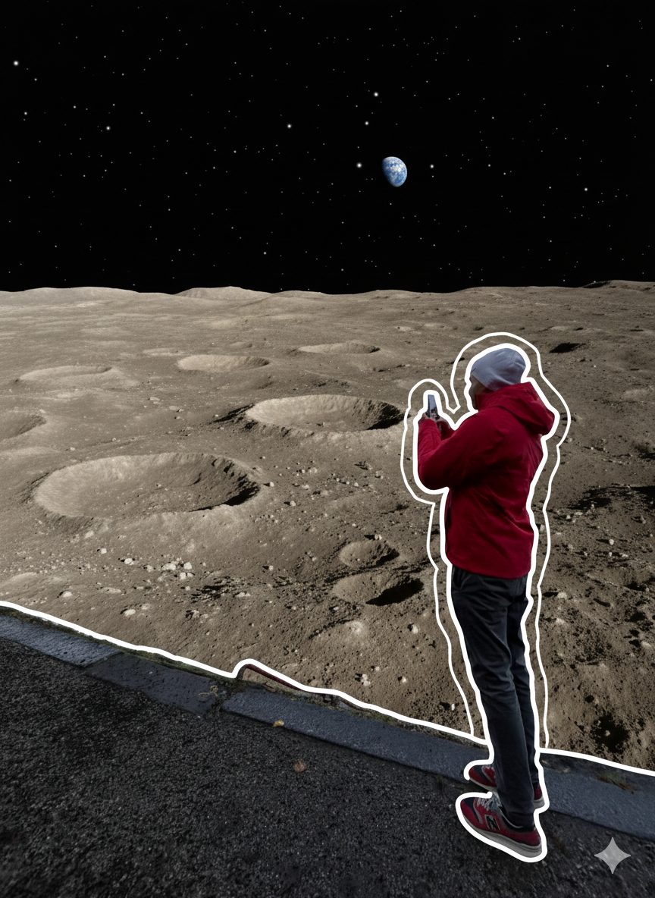
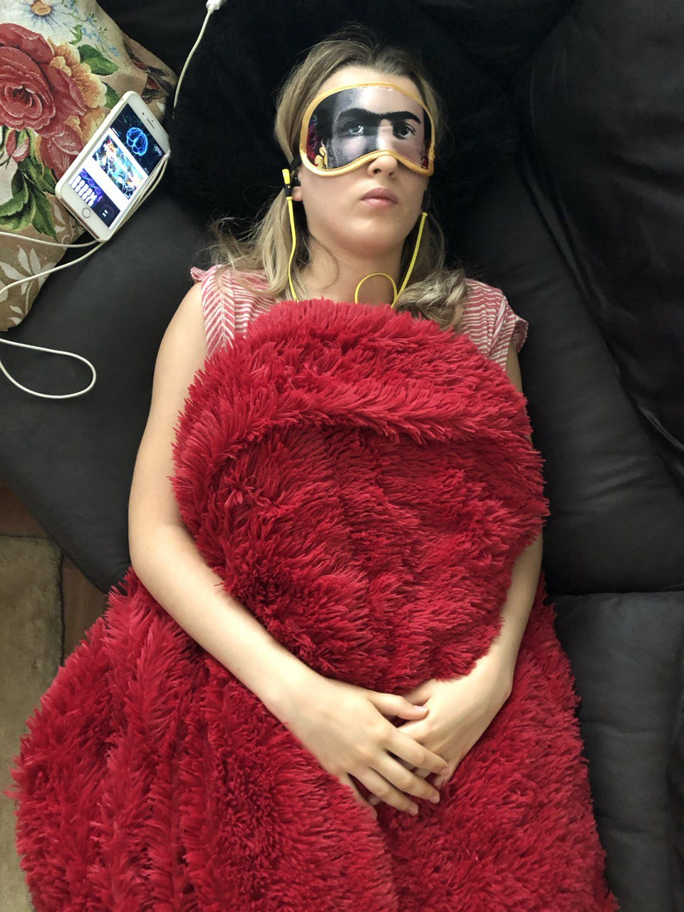
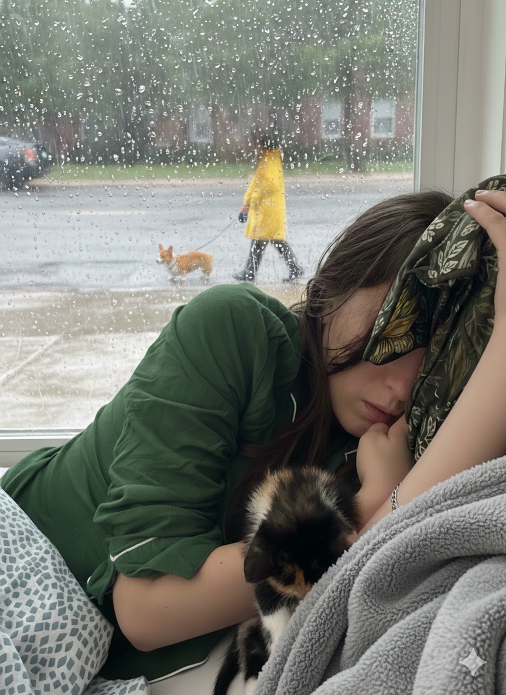
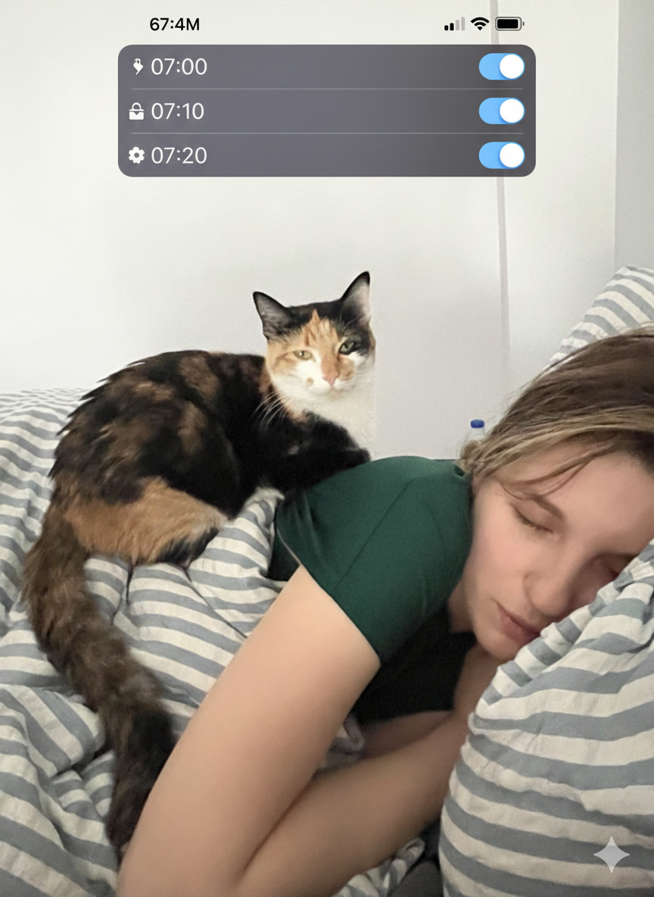
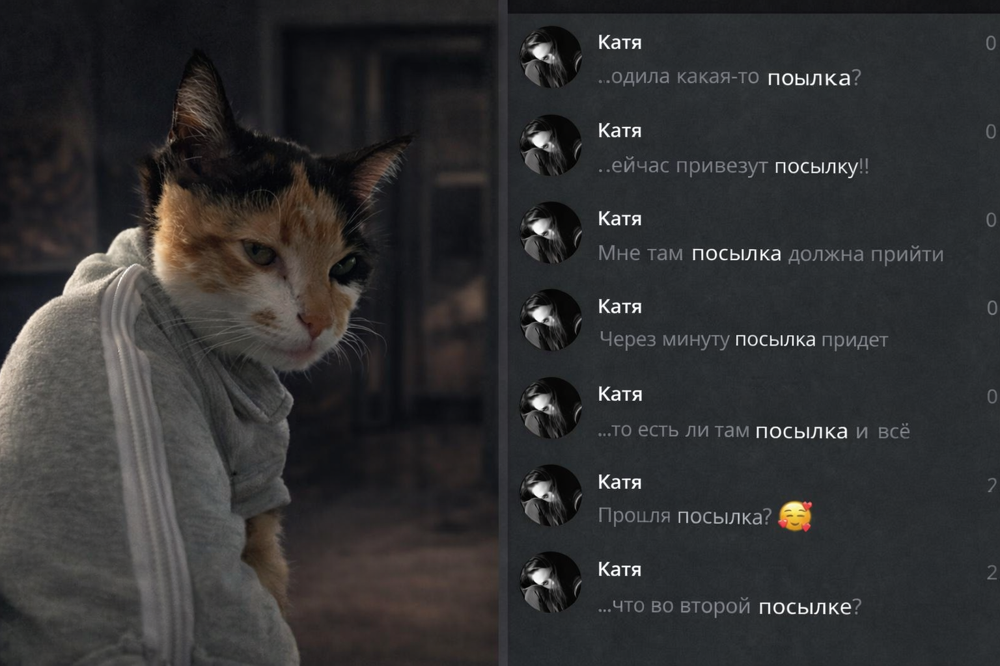
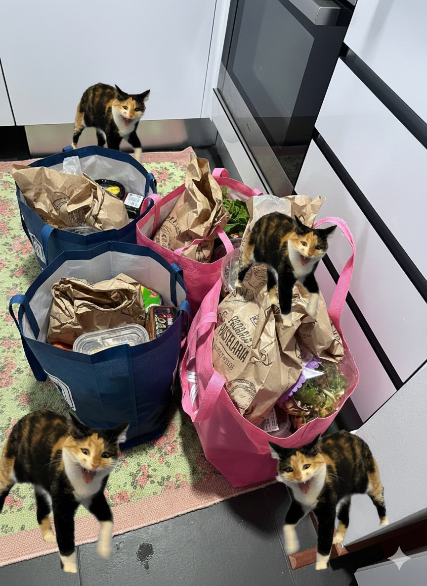

💛 Любовь это…
гулять по Луне,
потому что в прошлом году уже подарил ей весь мир.

💛 Любовь это…
делать вид, что не устал,
когда она рассказывает пятую историю подряд.

💛 Любовь это…
гулять вместе даже в плохую погоду

💛 Любовь это…
Выключать пять её будильников на 7:00, когда тебе вставать в 9

💛 Любовь это…
планировать экономить,
и заказать доставку в последний раз.

💛 Любовь это…
каждый день ходить ей за шоколадкой.
Я люблю тебя 🤍
Даже если завтра придётся идти ещё за одной шоколадкой.